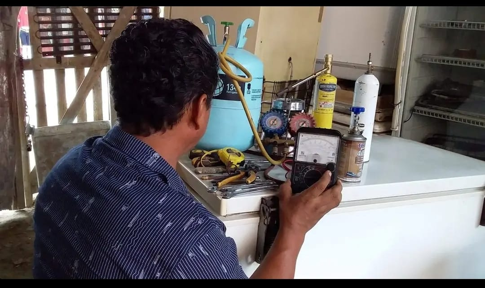

Aquí encontrarás toda la información que necesitas saber sobre lo que arregla Angel.
La cocina puede referirse al lugar donde se preparan alimentos o al aparato utilizado para cocinar. Angel repara cocinas a gas, eléctricas y combina los conocimientos técnicos con experiencia práctica.
Componentes principales
Quemadores o resistencia eléctrica
Horno
Encendedor eléctrico (en cocina de gas)
Termostado (en hornos)
Parrillas y bandejas
Problemas comunes:
Precio estimado de reparación
entre $15 y $50 USD, dependiendo de la pieza y la complejidad de reparacion.
Una nevera conserva los alimentos al mantener temperaturas bajas mediante un ciclo de refrigeración. Angel revisa sistemas completos para que vuelvan a funcionar correctamente.
Componentes principales:
Compresor
Condesador
Evaporador
Termostato
Ventilador interno
Tuberia y gas refrigerante
Precio estimado de reparación
Entre $20 y $100 USD, dependiendo de la avería y del repuestos.
Una licuadora mezcla materiales, ya sea secos o líquidos. Angel revisa motor, cuchillas, conexiones eléctricas y sellos para que funcione suave y sin ruido.
Motor eléctrico
cuchillas de acero
Vaso de vidrio o plastico
Base y controles
Junta o sello de goma
Precio estimado de reparación:
Entre $10 y $30 USD, según la pieza y el daño.
un ventilador es un aparato eléctrico diseñado para mover el aire y generar una corriente que proporcione ventilacion y frescura en un espacio, Angel revisa cada Componente hasta encotra el fallo.
Componentes principales:
Motor
Rejilla protectora
Base
Interrupto
Precion estimado de reparación:
Dependerá del daño y la piezas a cambiar, pero puede varia entre $5 y $20 USD en la mayoria de los casos.
Un aire acodicionado es un aparato diseñado para enfriar, deshumidificar y,en algunos caso calentar el aire de un espacios encerrado, Angel revisara cada Componente hasta encotra el fallo
Componentes principales:
Compresor
Condesador
Evaporador
Ventiladores
Filtro de aire
Termostado o control de electrónico
Fallas comunes
Precio estimado de reparación
Desde $30 hasta $150 USD, dependiendo del tipo de averia y del modelo del aire acondicionado.
una Lavadora es un electrodomésticos diseñado para lavar ropa y textiles de forma automatica, Angel la revisara hasta encotra la falla.
Componentes principales:
Tambor
Motor
Bomba de desagüe
Resistencia
Panel de control
Mangueras de entrada y salida de agua
Amortiguadores y resortes
Problemas comunes
Precio estimado de reparación
Desde $20 hasta $120, dependiendo de la averia y la marca de la Lavadora
Nombre: Angel Alfoso
Apellido: Moreira Murillo
Servicio: Reparación de electrodomésticos
Teléfono: 098 271 0584
Ubicación: Ecuador/Esmeraldas
Angel solo esta dispinible en Ecuador.
Esta es una página demo se estar mejorando cada vez q sea posible.